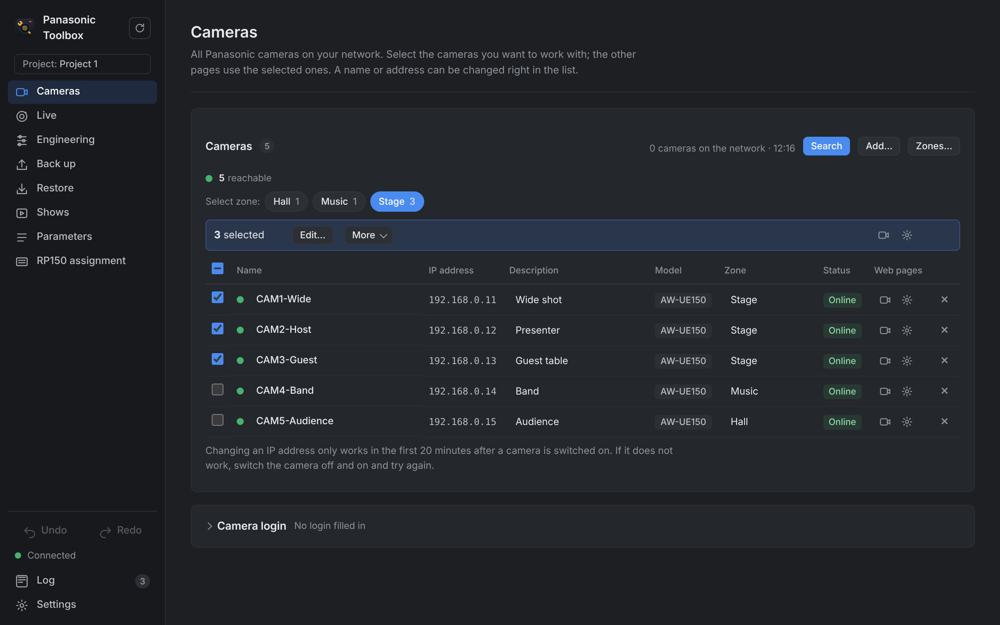
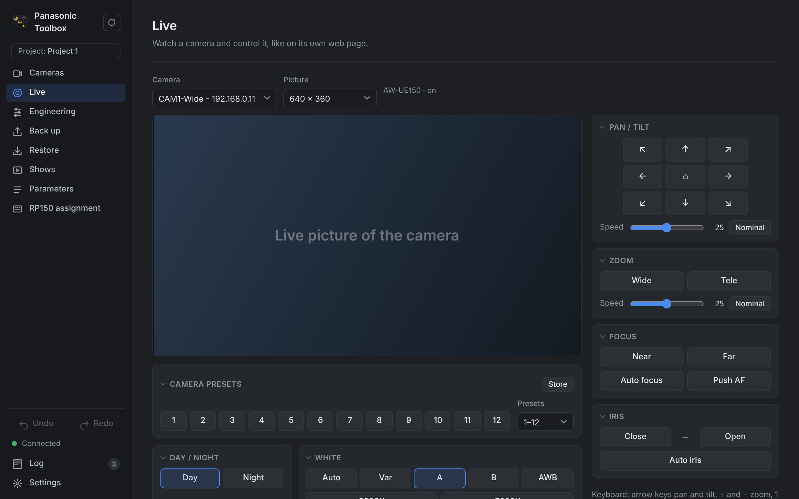
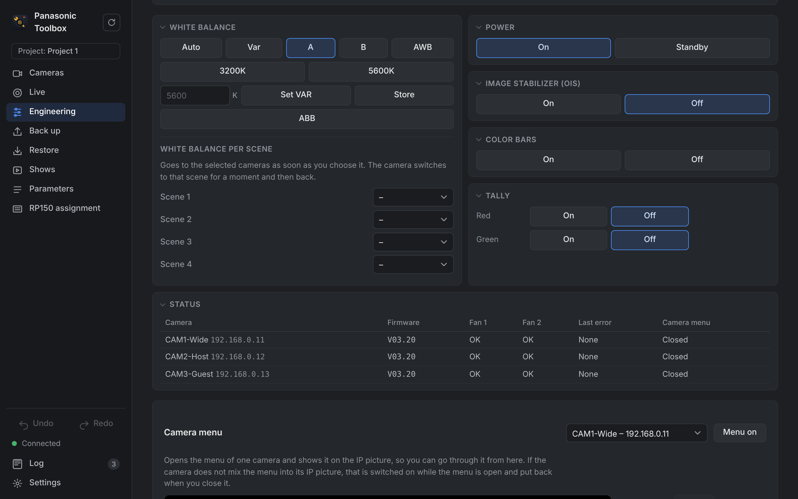
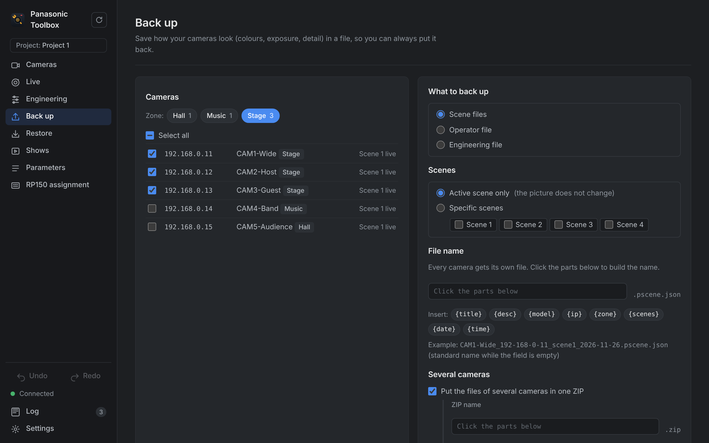
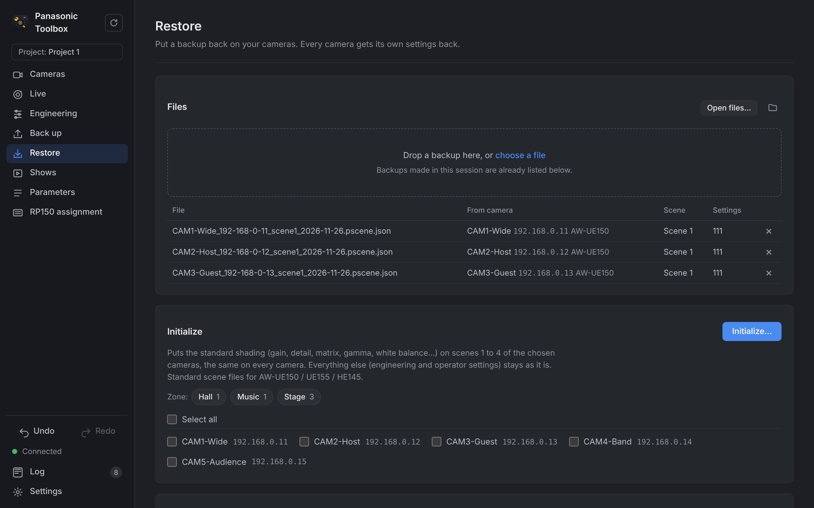
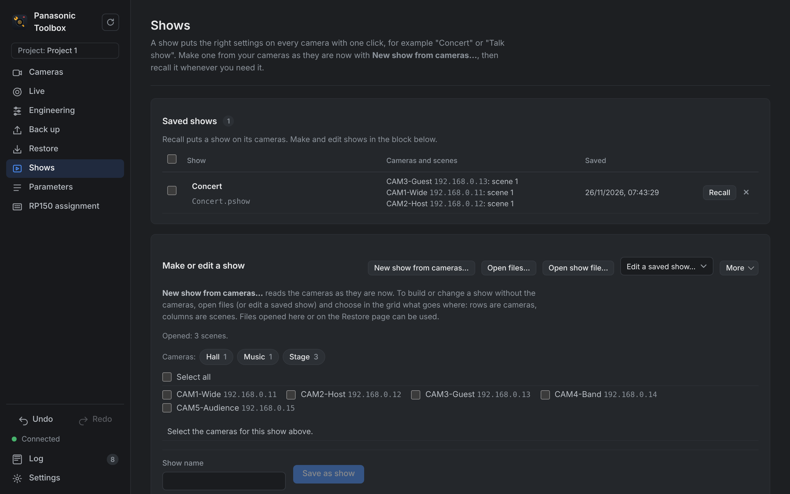
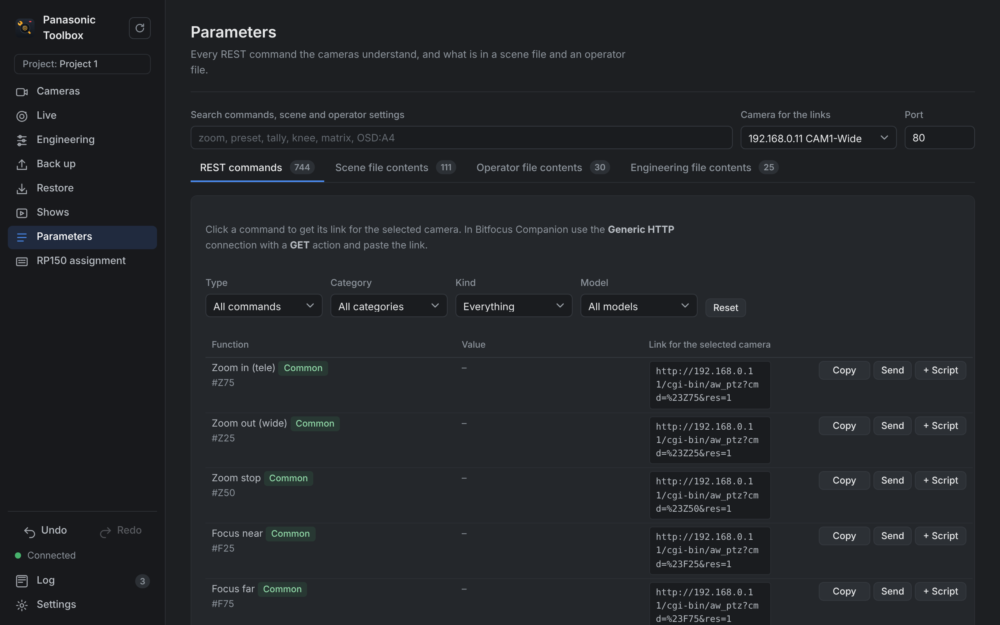

Find, control, back up and set up your Panasonic PTZ cameras and AW-RP150 remotes, from one app on your Mac or PC.
Panasonic Toolbox runs on macOS 11 or later and Windows 10/11. It is free and needs no account.
Open the .dmg and drag Panasonic Toolbox to Applications. Or install from Terminal, always the newest version:
cd /tmp && curl -fL -o PT.zip https://github.com/seppeva/panasonic-toolbox/releases/latest/download/PanasonicToolbox-macOS-AppleSilicon.zip && rm -rf "/Applications/Panasonic Toolbox.app" && ditto -x -k PT.zip /Applications && xattr -cr "/Applications/Panasonic Toolbox.app" && open "/Applications/Panasonic Toolbox.app"
Intel Mac: replace AppleSilicon with Intel.
Run the installer; no administrator rights are needed. Or in CMD, always the newest version:
curl -Lo p.exe https://github.com/seppeva/panasonic-toolbox/releases/latest/download/PanasonicToolbox-Windows-Setup.exe&&p.exe
"Windows protected your PC": click More info, then Run anyway. Allow private networks in the firewall.
Select the cameras you want to work with on the Cameras page. The other pages use the selected cameras.
| Where | What it does |
|---|---|
| Menu on the left | Cameras, Live, Engineering, Back up, Restore, Shows, Parameters, RP150 assignment |
| Project | Keeps productions apart: each project has its own cameras, zones, shows, settings and folder |
| Zones | Click a zone (for example Stage 3) on any page to select only its cameras. Shift-click adds or removes a zone, so you can select several zones |
| Select all | The checkbox above every camera list selects or clears all cameras |
| Undo / Redo | Bottom left, or Cmd/Ctrl+Z and Shift+Cmd/Ctrl+Z |
| Log | Everything the app did, with the time |
| Settings | Save folder, projects, timing and the raw camera answers for technicians |
Camera login. Fill in the cameras' user name and password once under Camera login at the bottom of the Cameras page. The app needs it to change settings, switch IP video and open the web pages for you.
Files are saved in Downloads › Panasonic Toolbox, with a folder per project. Nothing is sent to a camera until you confirm what will change.
Finds every Panasonic camera on your network, even one outside your IP range, just like Easy IP Setup.

| Dot | Meaning |
|---|---|
| Green | In your IP range and reachable |
| Amber | In another IP range than this computer: give it a new address first |
| Red | Not reachable: check power, cable and IP address |
| Blue | Found on the network, not in your list yet |
Edit… (in the selection bar) changes everything about the selected cameras in one window: name, IP address, subnet mask and gateway go to the cameras; description, zone, port and login stay in the app. Fill in all numbers the addresses from the first one. A camera accepts a new IP address only in the first 20 minutes after it is switched on. An address of a broken camera that no longer answers can be reused: the new camera takes over its zone and description.
Web pages. The icons in each row open the camera's live page or settings page, already logged in. The same icons in the selection bar open them for every selected camera. AW-RP remote controllers can be in the list too: they show Online · remote controller and get no camera actions.
Watch one camera and control it from your computer, like on its own web page.

| Block | What you can do |
|---|---|
| Pan / tilt, zoom, focus, iris | Hold a button to move; the camera stops when you let go. Speed with a button back to nominal. Auto focus, Push AF, Auto iris. |
| Camera presets | Recall with one click; Store then a number saves the current position |
| White | Auto, Var, A, B, 3200K, 5600K, a kelvin value with Set VAR, AWB and Store |
| Black, Day / night | ABB; Day or Night |
| Shooting mode | Normal or High Sens. |
| ND filter | Clear, 1/4, 1/16, 1/64 |
| Scenes | Switch to scene 1 to 4 |
Keyboard: arrow keys pan and tilt, + and − zoom, 1 to 9 recall presets. Fold a block you don't need by clicking its title. No picture? Switch on JPEG streaming in the camera (Video over IP).
Changes settings on many cameras in one go and shows the result per camera at the bottom of the page.

At the top, select the cameras (Select all and the zones help). Every setting is in one place:
Saves how your cameras look and are set up, in files you can keep, share and put back.

| Kind | What is in it |
|---|---|
| Scene files | All picture settings of a scene. Live scene only (the picture does not change) or Specific scenes. |
| Operator file | An operator's own preferences: preset speeds, pan/tilt and lens behaviour |
| Engineering file | The system setup (format, OSD mix, tally, pan/tilt, presets, fans, IP video). No white balance per scene: that is in the scene files. |
Select the cameras, choose what to back up, check the file name and click Back up. Several cameras go into one ZIP in your project folder.
Puts a back-up back on the same or other cameras.

By default the current settings are saved first and every setting is read back afterwards. Undo takes a restore back. Save as show turns the rows into a show.
This block on the Restore page starts with the cameras: tick them, use Select all, or click a zone. Then choose one of the two actions. Both run like a restore: what changes first, a back-up, and a check afterwards.
Puts a whole setup on all cameras with one click, for example "Concert" or "Talk show".

A library of all REST commands, per model, for Bitfocus Companion and other software.

Assigns cameras to the CAM buttons of an AW-RP150 in one go. Experimental.
PRIVATE/MEIGROUP/PAVCN/SBG/SYSCAM/RP150/DATA/Network.s15 from the card on this page.| Problem | What to do |
|---|---|
| Mac finds no cameras, or "No route to host" while ping works | System Settings › Privacy & Security › Local Network: switch Panasonic Toolbox on, then quit and reopen the app |
| Amber dot | The camera is in another IP range: give it an address in your range with Edit…, or change your computer's address |
| Red dot | The camera does not answer: check power, cable and IP address |
| A new IP address is not accepted | Switch the camera off and on, then try again within 20 minutes |
| "IP address in use" | Another device still answers at that address. Switch it off or give it another address first |
| Settings refused, or web pages ask for a password | Fill in the camera login on the Cameras page |
| No picture in Live | Switch on JPEG streaming in the camera (Video over IP) |
| A setting shows ER3 | That value does not exist on this model, for example preset speed Mid on the AW-UE150 |
| IP video "not available" right after a frequency change | The camera's web server needs a little longer after the restart; wait and try again |
Quit the app and run in Terminal. Projects, cameras, shows and settings are cleared; back-up files stay in Downloads.
rm -rf ~/Library/Application\ Support/Panasonic\ Toolbox ~/Library/WebKit/be.seppevanaken.panasonicscene ~/Library/Caches/be.seppevanaken.panasonicscene
Questions or a problem? Mail seppe@vanaken.be, or use the mail link in Settings › About.
Website and downloads: seppeva.github.io/panasonic-toolbox
Panasonic is a trademark of Panasonic Holdings Corporation. Panasonic Toolbox is not made by Panasonic.